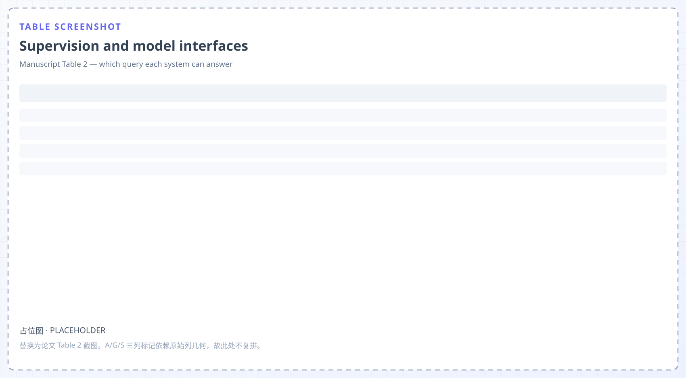
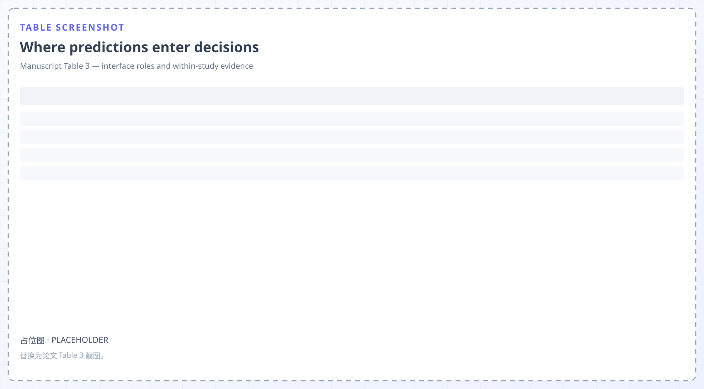
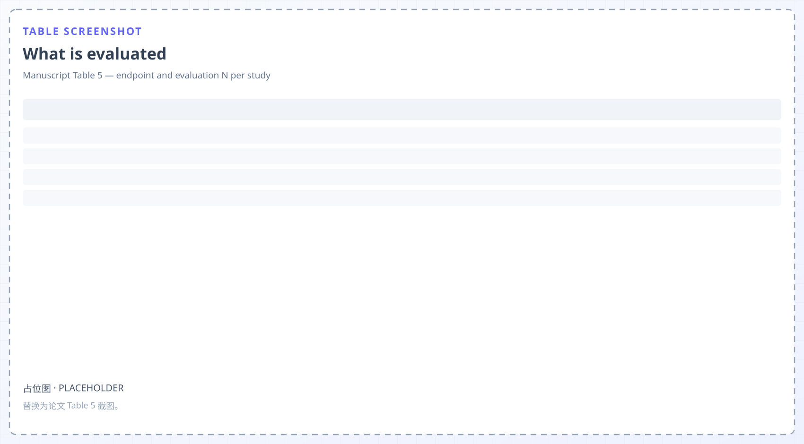

Recursive fidelity
GNS improves recursive rollouts under perturbed training while worsening clean one-step accuracy. ContactWorld's lowest prediction-error growth does not give its best planning success.
GNSContactWorld
Survey · Physical AI · World Models
A world model can be accurate and still useless to the decision that consumes it. This survey reviews data foundations and modelling approaches across robotics, navigation, and autonomous driving, then asks what each downstream use actually measures.
Manuscript submitted for review · 2026
Abstract
Differences in representations, action interfaces, and evaluation protocols obscure when better predictions yield better decisions. Three gaps recur across robotics, navigation and driving: recursive accuracy is not planning utility, evaluator agreement is not training utility, and predictive information is not execution-time correction.
Each gap has the same shape. An experiment reports an endpoint that does not test the claim being made, so a reader cannot tell whether the model helped the decision or only the forecast.
GNS improves recursive rollouts under perturbed training while worsening clean one-step accuracy. ContactWorld's lowest prediction-error growth does not give its best planning success.
DexTouch-WM reaches r = .844 for WM-Mix against .646 for WM-Robot, yet WM-Robot trains two of three learners better. IWS finds the same learner dependence.
Under a fixed oracle context, FutureRTC scores 96.6% from the first action and 0.9% from index 20. TacPAC reaches 47 → 64% yet leaves Bottle at 40 / 40%.

Part I — Foundations and Scope
A world model is located before it is scored. The survey uses three descriptive coordinates, then adds the step most comparisons skip: each coordinate fixes which evidence can support a claim.
Pixels or video, latent state, objects and geometry, or physical and multimodal variables. The choice constrains what a consumer can use: derivatives for an integrator, geometric change for inverse dynamics.
Passive, supplied candidates, goal-conditioned, or joint world–action. Output modality never reveals this: two video models can sit at opposite ends of the axis.
Simulation, policy learning, policy evaluation, planning, or execution-time correction. One model may serve several, but evidence from one does not carry to another.
Freezes an action-free encoder, then trains a predictor on synchronized robot observations and base-frame end-effector changes, supporting planning over candidate actions.
Produces task-conditioned video, grounds frame transitions through a separately trained inverse-dynamics decoder, and executes open-loop in its reported experiments.
Predicts particle accelerations and integrates them, rebuilding proximity as particles move. It accepts no new candidate-command queries.
Trains an actor on returns imagined in latent space. The prediction is real; the interface offers no executable action query.
Working definition. A world model is a learned predictor of environmental evolution — future observations, latent states, object relations, physical quantities, or action consequences. Prediction, policy, and control are computational roles, not necessarily separate networks: action generation alone does not establish consequence prediction.
758 publication families across seven retrieval views. A discovery inventory: not an exhaustively screened sample, and not a set of full-text assessments.
17 families, each with a locatable original experiment. Includes negative controls: GNS's one-step/rollout trade-off, ContactWorld's Valve and Dim regressions, TacPAC's unchanged Bottle task.
Part II — Data, Representations, and Predictive Models
A command-response evaluation needs four links: a commanded action, the realized motion, the environmental response, and the next observation. Most resources cover one or two of them, and which two decides what the trained predictor can be asked.

Both pair commands with observations across scenes and bodies, but frame, duration, control mode and observation frequency stay unaligned. Pooling can change which transition a pair describes.
Rendered evolution with depth, trajectories, materials and text under asset-disjoint splits — and no robot-command trajectories, so command queries cannot be trained on it.
Aligns tactile layouts, coordinates, vision/touch streams and kinematic retargeting, making contact consequences available beyond the human recording.
V-JEPA 2 learns the visual representation first, then trains a command-conditioned predictor. DreamDojo learns latent-action proxies from human video, then replaces them with robot actions in post-training.
GNS and MeshGraphNets integrate predicted accelerations or node outputs from a supplied physical state. State acquisition sits outside what they test.
Cosmos Policy with roughly 800 simulated demonstrations per task and domain randomization reports 35% zero-shot on four Franka tasks — a result for video pretraining, generated demonstrations and randomization together.
The missing endpoint. IntPhys 2, Physion and PHYRE test event judgement and contact at the environmental-response link; none pairs a commanded action with its measured response. The manuscript proposes a paired-state intervention that varies command direction, magnitude or duration and measures motion and contact separately. It remains unexecuted.
Part III — Learning, Simulation, and Decision Making
Each consumer scores a different quantity, so a result in one column cannot be carried into another. The three gaps above are exactly mismatches between a claimed column and a measured one.

GNS improves recursive rollouts under perturbed training while worsening clean one-step accuracy. One number cannot represent both, and the survey keeps them separate.
Removing video co-training costs Fast-WAM 8.0 RoboTwin and 4.1 LIBERO points while leaving architecture and inference unchanged — a supervision effect, not an inference switch.
DexTouch-WM reaches r = .844 for WM-Mix against .646 for WM-Robot, but WM-Robot trains two of three learners better. Agreement and training utility diverge inside one study.
ContactWorld's four variants score 32.3% point clouds, 39.5% full tactile, 38.6% visual-only cost, 36.5% width-matched on one 12-task protocol: error growth does not order success.
FutureRTC separates detection from revision: 96.6% from the first action, 0.9% from index 20 under a fixed oracle context. TacPAC reaches 47 → 64% yet leaves Bottle at 40 / 40%.
Astra revises proposals by interpreting observations without scoring a predicted trajectory: 48% hybrid versus 26% direct on ten RoboDojo tasks. It sharpens the definition rather than extending the list.
Part IV — Evaluation, Safety, and Reliability
The levels are claim-dependent checks, not six gates to pass in order. What matters is which level a reported endpoint actually touches.
Visual coherence of the predicted future, measured on appearance alone.
Task-relevant dynamics, geometry, or contact state in the predicted evolution.
Does changing a supplied command produce the corresponding robot or agent motion?
Does that realized motion produce the environmental response — displacement, contact?
Effect on action choice or learning under a stated consumer and protocol.
Failure rate, intervention timing, recovery, and constraints during execution.


Where the levels break. AVID separates L1 from L3 inside one evaluation: RT-1 frame metrics score appearance, while Action Error Ratio compares generated and real video through a video-to-action regressor — a motion proxy, not robot execution. GNS shows L2 recursion trading against one-step L2. No L1 or L2 gain establishes an L5 benefit, and a policy-evaluation correlation is not a newly trained policy's success rate.
Lyapunov bounds, safety filters and control-barrier QPs each require a valid state and uncertainty model plus a stabilising policy, a feasible terminal backup, or an admissible safe input. A visual forecast supplies none of these.
VLA-FixBench's automatic judgers reach 0–25% completion against 30% policy-only and 65% human intervention on two physical Franka tasks. Reliability needs the consequence, not only the timing.
Synthesis
The reported contrasts support consumer-specific validation choices, not a ranking of model families. Two tables carry that evidence, and both are reproduced here for screenshots of the original.


GNS's recursive robustness cannot replace ContactWorld's planning endpoint, because the second scores goal distance while the first scores prediction error.
DexTouch-WM's evaluator ranking does not select a training-data generator independently of the learner, as IWS's mixture results also show.
FutureRTC aligns the action index to a time origin; TacPAC changes access to a cached predicted tactile reference. Two mechanisms, often reported as one runtime effect.
Open problems
Each item is a testable gap, stated the way the survey argues future work should state them.
Rejected candidates' physical outcomes are never observed. Selection regret stays unmeasurable until a protocol branches failure states while fixing candidate set, continuation policy, horizon and repeats.
Evaluator agreement cannot select a data generator independently of the learner. One correlation statistic cannot substitute for the downstream training recipe.
Correction access, action-index alignment and update timing are distinct operations. No reported study collapses them into a single runtime-efficiency claim.
Formal certificates assume a valid state and uncertainty model plus a stabilising policy, a feasible backup, or an admissible safe input. A forecast provides none of them.
Automatic repair pipelines score below policy-only baselines on physical tasks. Reliability requires the consequence of an intervention, not only its timing.
The Core Evidence Set is mechanism-focused, not representative. The prevalence of benefits and failures cannot be inferred from it, and inclusion rationales were recorded retrospectively.
Citation
Author information is withheld for review; update this block once the paper is public.
@article{worldmodelsphysicalai2026,
title = {World Models for Physical AI: Learning to Predict,
Plan, and Act in the Real World},
author = {Anonymous Author(s)},
journal = {Manuscript submitted for review},
year = {2026},
note = {Coverage Corpus: 758 publication families;
Core Evidence Set: 17 study families}
}Scope note. Numbers on this page are within-study anchors, not cross-survey scores, and should be read against the protocol boundaries in the manuscript. Figures 2, 3 and 5–6 of the manuscript are not reproduced here.